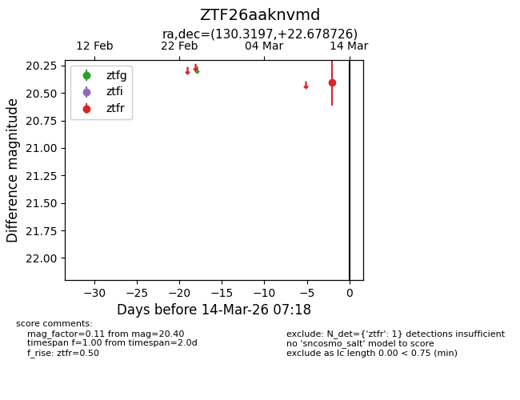
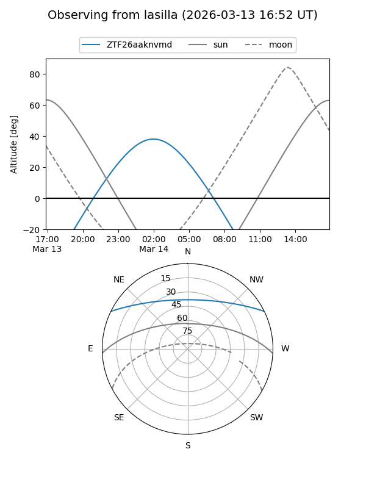
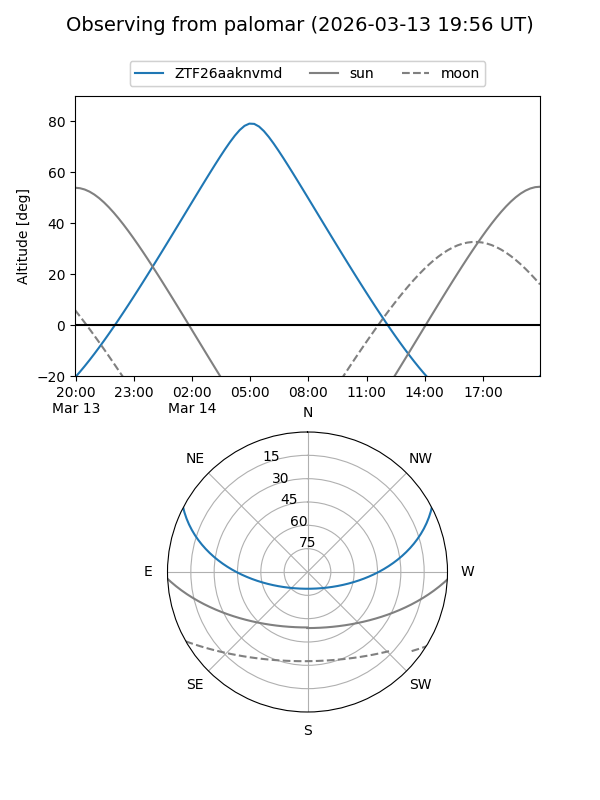

ZTF26aaknvmd
Target ZTF26aaknvmd at 2026-03-14 07:21
Aliases and brokers:
FINK: link
Lasair: link
ALeRCE: link
alt names
ZTF26aaknvmd (ztf,fink_ztf)
Coordinates:
equatorial (ra, dec) = 130.3197,+22.67873
equatorial (HMS+DMS) = 08:41:16.73,+22:40:43.41
galactic (l, b) = (202.6083,+33.67503)
Flags:
Photometry:
last ztfr=20.40
1 ztfr detections
Lightcurve

Visibility


Additional plots